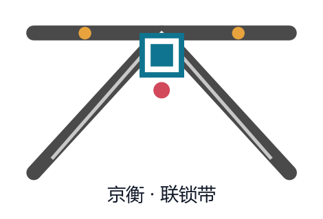
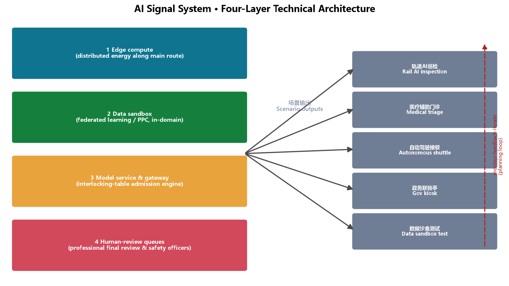
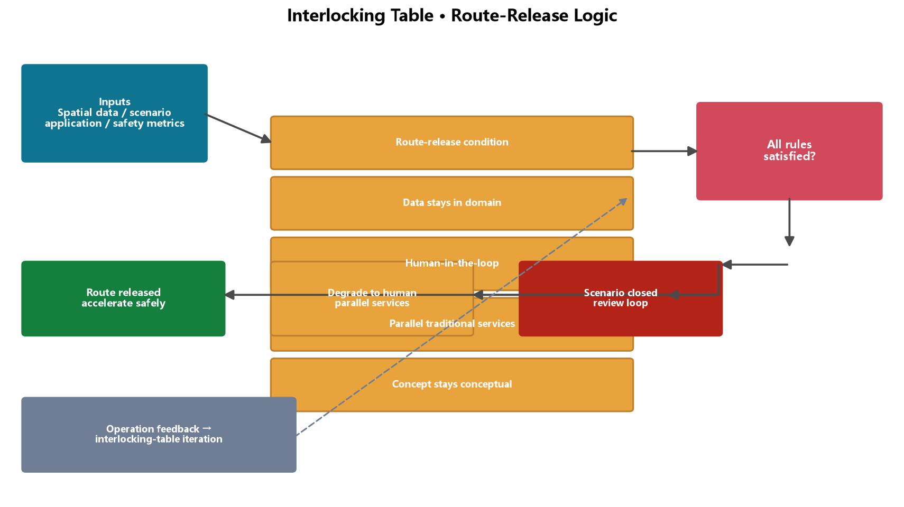

Jingzhang Interlock Belt: AI Innovation Mutual-Locking on a Century-Old Rail
Translating the railway interlocking mechanism (switch-signal-route mutual locking) into the spatial and governance logic of the AI Innovation Belt: the Jing-Zhang heritage park is the north-south main route, Zhongzhiyuan / AI Origin Community / Dazhongsi are three switch groups, AI scenario nodes are signals, forming an innovation interlock system that can accelerate safely, trace origins, and land applications.
Jingzhang Interlock Belt: AI Innovation Mutual-Locking on a Century-Old Rail
1. Design Basis and Source List
This is a conceptual design submission by the AI urban-design agent "JingHeng" to the open call for the Centennial Jing-Zhang AI Innovation Belt. It relies on the qualification pre-announcement (Haidian Branch, Beijing Municipal Commission of Planning and Natural Resources, 2026-05-09), the agent open-call taskbook excerpt (user-provided cleared document), the provisional three-level scope and key-area polygons (repository-maintained), and public standards on urban design, regulatory detailed planning, land-use classification, generative AI, barrier-free access, and elderly-friendly services Source Source Standard.
Only public or cleared data is used; no secret maps, non-public planning materials, or personal data are included. All spatial suggestions are "conceptual proposals" and "reference schemes", not substitutes for formal planning or government decisions Standard Source. Complete sources, metrics, standards, design depth, and task coverage live in sources.json, metrics.json, compliance_matrix.json, standard_matrix.json, and design_depth_matrix.json.
Core design judgment: railway interlocking is the best spatial and governance metaphor for the AI Innovation Belt. On the Jing-Zhang Railway, switches, signals, and routes must interlock — unless every switch is confirmed and every signal cleared, no route is granted. This is not restriction; it is safe acceleration: because interlocking is reliable, trains run fast. This proposal translates that mechanism into spatial organization: one main route (Jing-Zhang heritage park) + three switch groups (three key areas) + a signal system (AI scenario nodes) + an interlocking table (open governance rules), so innovation accelerates within "controlled openness". One catchphrase: NO INTERLOCK, NO ROUTE — echoing the century-old staff-and-ticket block system of the Jing-Zhang Railway (one staff, one section; no token, no entry) Source.
2. Three-Level Scope Framework
The three levels correspond to three working depths:
Coordinated research area (43.6 km²): north to North 5th Ring Road, east to Jingzang Expressway, south to Xizhimen Outer Street, west to Wanquanhe Road. This level answers regional strategy — how the AI ecosystem coordinates with the North Latitude community, Future Science City, Huairou Science City, Yizhuang, and the Beijing-Tianjin-Hebei region Source Standard. The proposal advances a "one route, three switches, two wings" regional structure.
Overall design area (about 11.4 km²): the corridor within 1–2 km around the Jing-Zhang heritage park. This level reaches urban-design depth at regulatory-detailed-planning scale, answering functional layout, renewal framework, public space, mobility, and character. The proposal applies "interlocking renewal" — no large-scale demolition; instead the main-route green belt is the skeleton, switch nodes are levers, and micro-renewal is the basic move Depth Metric.
Key detailed design area (368.4 ha): Zhongzhiyuan AI Autonomous-Innovation Acceleration Area, Beijing AI Origin Community, and Dazhongsi AI Industry Cluster, south to north; areas match the announcement (192.1/104.3/72.0 ha) Spatial data Metric. This level reaches implementation-plan urban-design depth; the three key areas are the "acceleration switch, origin switch, and landing switch" (Chapter 5).
Disclosure: the boundary and key-area polygons used here are the repository-provided provisional substitutes, for generation, display, and intake self-check only Source; all areas and ratios must be recalculated when official polygons are published [assumption:A-BOUNDARY-001].

3. Coordinated Research Area: Industry and Future City Research
3.1 Naming and Logo Direction
Primary name: Jingzhang Interlock Belt (京张联锁带). "Jingzhang" carries the lineage; "interlock" carries the mechanism — the underlying logic that kept the Jing-Zhang Railway safe for a century, and the underlying logic of AI-era city governance: freedom interlocked with safety, efficiency with equity, technology with humanity Depth.
Logo direction: three rail lines converging at a node into a "人" (human) shaped fork — honoring Zhan Tianyou's switchback while expressing the "switch" decision image; a square "interface" mark sits at the fork center, meaning the standard interface between AI and the city, and between humans and machines. Palette: rail gray (heritage) + Haidian blue-green (innovation) + signal red/yellow (safety prompts). This is a conceptual direction for professional design teams to deepen Source Standard. A logo concept is attached with this package (assets/media/logo-vi.png):

3.2 Three Positionings and Five Functions
Positionings: Centennial Jing-Zhang Culture Belt, Urban AI-Life Experience Belt, AI-Integrated Innovation Belt; five functions: full-stack autonomous innovation system, world-class AI innovation ecosystem, new AI+ scenario empowerment paradigm, intelligent vibrant AI city, and global voice in AI governance Source. Spatial translation:
- Culture belt → main route: the heritage park is the walkable carrier of lineage;
- Experience belt → signals: AI scenario nodes form a perceivable signal system;
- Innovation belt → switches: three switch groups allocate direction and resources from basic research, incubation, to industrial landing.
3.3 Three Areas, Two Wings Loop
The loop is "upstream basic research — midstream acceleration — downstream landing" Source:
| Area/Wing | Role | Interlock function |
|---|---|---|
| Zhongzhiyuan AI Acceleration Area | Full-stack autonomous innovation | Acceleration switch: models, computing, pilot testing |
| Beijing AI Origin Community | World-class AI ecosystem | Origin switch: tracing, incubation, community |
| Dazhongsi AI Industry Cluster | AI-native new business | Landing switch: consumption, business, testing |
| Zhongguancun Service Wing (E) | Global factor allocation | Capital, IP, international service interface |
| Xiaoyuehe Scenario Wing (W) | Scenario empowerment | Living-city scenario testing and experience |
3.4 Global AI Ecosystem Cases (5–8)
| Case | Transferable mechanism | Spatial anchor |
|---|---|---|
| Silicon Valley (Stanford–Sand Hill) | University-capital-industry corridor | Origin incubators + Zhongguancun capital interface |
| Shenzhen (Huaqiangbei hardware) | Rapid prototyping and supply chain | Zhongzhiyuan pilot park |
| Hangzhou (Yunqi Town) | Scenario opening + annual convention | AI marathon + Dazhongsi pop-up belt |
| Singapore (AI governance & talent) | Regulatory sandbox + talent visas | Data sandbox + international developer community |
| London (East London Tech City) | Old-town renewal + policy zone | Interlocking micro-renewal + reserve land |
| Tel Aviv (military-to-civil) | Technology transfer brokerage | Zhongzhiyuan full-stack piloting |
| Toronto (waterfront smart community) | Public-space data-driven operation | Heritage park main route |
| Zhongguancun (local origin) | Electronics street → AI origin | Origin community culture belt |
Each case is distilled into a mechanism, not a copied form; no company lists, investment amounts, or output figures are fabricated Source [assumption:A-SCENARIO-001].

4. Overall Design Area: Urban Renewal and Regulatory-Plan-Level Urban Design
4.1 Spatial Structure: One Route, Three Switches, Two Wings
The overall area is a north-south corridor along the Jing-Zhang heritage park (about 11.4 km², roughly 9.7 km long):
- One route: the heritage-park main green route, about 300 m wide, the composite spine of culture, ecology, slow mobility, and public life Spatial data Metric;
- Three switches: Zhongzhiyuan (acceleration), AI Origin Community (origin), Dazhongsi (landing), each with a switch plaza Spatial data;
- Two wings: the eastern Zhongguancun service wing (capital and IP interface) and the western Xiaoyuehe scenario wing (living-scenario testing), interlocked with the main route by cross streets Spatial data.
4.2 Functional Layout and Renewal Framework
Conceptual land use within the provisional boundary follows MNR classification Standard Spatial data: research-type land (0802/0803/0804/0805/0806) about 367.6 ha, commercial services (05) about 181.6 ha, residential (0701, mostly retained existing communities) about 228.9 ha, green and open space (14) about 315.4 ha, and south-end reserve (16) about 51.6 ha Metric.
Interlocking renewal framework: "demolish/retain/renovate" is re-expressed as "lock (retain), calibrate (renovate), switch (new build), reserve (flexible)" Depth:
- Lock: heritage railway remains, existing communities and universities are retained;
- Calibrate: older industrial space is functionally swapped and upgraded (facades, public space);
- Switch: limited new build only at key switches (Zhongzhiyuan pilot belt, Dazhongsi smart-consumption core);
- Reserve: the south-end reserve stays flexible, not pre-fixed.
4.3 Building Scale and Intensity (Conceptual)
Without official regulatory conditions (FAR, height, density), no statutory figures are given; only an indicative footprint ratio is offered: conceptual building footprints total about 64.1 ha (~5.6% of site) Metric; mid-to-low rise (conceptual height ≤ 60 m) is suggested along the main route at Zhongzhiyuan and the Origin Community, with moderate increases possible at the Dazhongsi core — all subject to confirmed regulatory conditions [assumption:A-CONTROLS-001].
5. Detailed Design of Key Areas
5.1 Acceleration Switch — Zhongzhiyuan AI Acceleration Area (about 192.1 ha)
Positioning: main carrier of the full-stack autonomous innovation system and global AI-governance voice; accelerates "from model to pilot" Spatial data.
Structure: "west R&D — central route — east pilot":
- West: full-stack pilot park and accelerator cluster (0802), with foundation-model piloting, computing, and data services Spatial data;
- Central: heritage park Zhongzhiyuan section with the acceleration switch plaza Spatial data;
- East: AI healthcare test-validation zone (0806) and AI talent community (0701), forming a full "test—live—serve" loop Spatial data.
Renewal: mainly "calibrate + switch"; the pilot park and healthcare validation zone start in the near term; computing and power loads need professional verification [assumption:A-CONTROLS-001].
5.2 Origin Switch — Beijing AI Origin Community (about 104.3 ha)
Positioning: the junction of world-class AI ecosystem and centennial culture narrative, including the Qinghuayuan station heritage node Spatial data.
Structure: "trace — incubate — community" three rings:
- Core: around Qinghuayuan station, the Origin plaza and AI Origin Memorial (0803) narrating the lineage from the Jing-Zhang Railway to Zhongguancun to the AI Origin Spatial data;
- Inner: AI Origin incubator cluster (0802) and maker-service commercial belt (05) for students and early founders;
- Outer: retained existing communities (0701) upgraded by micro-renewal.
Renewal: mainly "lock + calibrate"; heritage must not be damaged Standard; the plaza and memorial deepen in the near term.
5.3 Landing Switch — Dazhongsi AI Industry Cluster (about 72.0 ha)
Positioning: landing window for AI-native new business and AI+ consumption Spatial data.
Structure: "consumption — business — community":
- West: Dazhongsi smart-consumption core (05), with AI retail pop-up belts and smart-life services;
- Central: landing switch plaza and park section Spatial data;
- East: smart-business cluster (05) + retained community (0701).
Renewal: mainly "calibrate"; existing commercial stock is functionally upgraded; mid-term; the risk is the interface with current tenants, requiring operator participation [assumption:A-SCENARIO-001].

6. AI Innovation Ecosystem, Personas, and AI+ Scenarios
6.1 Personas (≥5)
| Persona | Profile | Core needs | Anchor space |
|---|---|---|---|
| P1 Startup AI engineer | 27, startup core | Compute, piloting, funding interface | Zhongzhiyuan accelerator |
| P2 Graduate researcher | 24, PhD student | Equipment, mentors, scenario data | Origin incubator |
| P3 Zhongguancun executive | 40 | Business, forums | Dazhongsi business belt |
| P4 Elderly resident | 68 | Accessibility, retained traditional services | Main route + community |
| P5 Student family | 13 y.o. student + parent | AI education, public experience | Heritage park |
| P6 International developer | 30 | Open source, international communication | Developer plaza + Origin |
6.2 AI Scenario Cards (12; 4 are test/validation)
Test/validation (T):
| # | Scenario | Spatial anchor | Validation | Human review / boundary |
|---|---|---|---|---|
| T1 | Rail AI inspection demo | Main green route | Vision inspection model | Data anonymized, human sampling |
| T2 | LLM-assisted medical triage | Zhongzhiyuan healthcare zone | Triage assistance | Physician final review, privacy Standard |
| T3 | Autonomous shuttle loop | Zhongzhiyuan–Origin | Shuttle dispatch | Safety officer, speed limit, filing |
| T4 | Data sandbox | Dazhongsi business belt | Federated learning/PPC | Data stays in domain, audit trail |
Experience (E, 8):
| # | Scenario | Spatial anchor | Users |
|---|---|---|---|
| E1 | AI government-service interlock kiosk | Switch plazas | P3/P6 |
| E2 | AI education lab | Origin education zone | P5 |
| E3 | Jing-Zhang digital twin | Origin Memorial | All |
| E4 | Smart retail pop-up belt | Dazhongsi core | P3/P6 |
| E5 | Smart talent-community operation | Zhongzhiyuan community | P1 |
| E6 | AI barrier-free guide | Main route | P4 Standard |
| E7 | Developer open-source plaza | Origin plaza | P1/P6 |
| E8 | AI art installation belt | Main route | All |
Full scenario mapping lives in compliance_matrix.json (agent.3) Source; all scenarios require privacy protection, human review, and parallel traditional services Standard.

7. Land Use, Building Scale, and Retain-Renovate-Demolish Strategy
Design judgment: "interlocking renewal" governs land use and building scale — instead of spreading new supply across the whole belt, additional capacity is concentrated at the three switch nodes while the rest is retained or functionally recalibrated Spatial data.
Land use: 34 concept parcels fully cover the provisional boundary without gaps or overlaps, classified with the MNR land-use guide subset Standard. Research land (0802–0806) of about 367.6 ha concentrates in Zhongzhiyuan and the Origin Community to support full-stack autonomous innovation; commercial services (05) of about 181.6 ha cluster along the east of the main route and Dazhongsi; residential (0701) of about 228.9 ha is mainly retained existing communities; green and open space (14) of about 315.4 ha forms the main-route green skeleton; the south-end reserve (16) of about 51.6 ha keeps long-term flexibility Metric Metric.
Building scale: conceptual footprints total about 64.1 ha (footprint ratio about 5.6%) Metric; the 61 indicative blocks test massing logic only Spatial data and are not survey-grade or demolition/renovation conclusions [assumption:A-BUILD-001].
Lock/calibrate/switch/reserve: lock (heritage, communities, universities retained) → calibrate (older industrial space functionally swapped, public space upgraded) → switch (limited new build at Zhongzhiyuan pilot belt and Dazhongsi core) → reserve (south-end flexible reserve) Depth.
Data gaps: approved regulatory intensity (FAR/height/density/green ratio), existing-building surveys, and ownership data are pending; no statutory conclusion is made here [assumption:A-CONTROLS-001].
8. Transport, Rail, Municipal Infrastructure, and Public Services
Roads and slow mobility: a "two-north-south, three-east-west" skeleton — west arterial and east secondary run north-south; seven cross streets link the wings Spatial data Metric; walking and cycling greenways run inside the main route (including the Xiaoyuehe scenario greenway, indicative) Spatial data.
Rail: existing rail alignment and Metro Line 13 are kept as constraint layers (indicative) Spatial data; station-connection space is reserved at the three switch plazas (conceptual; no alignment engineering claims) [assumption:A-RAIL-001].
Municipal and new infrastructure: distributed energy and edge-computing utility trenches are suggested along the main route (conceptual). Indicative computing-load estimate (conceptual, based on public case magnitudes): referencing typical domestic AI-computing centers (PUE 1.2–1.4, 8–15 kW per rack), if the Zhongzhiyuan pilot park configures about 50–100 AI-computing racks, the indicative power load would be about 0.4–1.5 MW with annual consumption of about 3.5–13 GWh — a starting point for professional calculation, not a commitment [assumption:A-CONTROLS-001].
Public services: existing universities and community services are leveraged; AI innovation service platforms (incubation, IP, scenario opening) and talent-life services (talent housing, childcare, eldercare) are added Depth.
AI technical architecture (conceptual): a four-layer technical skeleton is reserved along the main route — (1) edge-computing nodes (distributed energy and edge-computing utility trenches); (2) data sandbox (federated learning / privacy computing, data stays in domain); (3) model services and scenario gateway (the interlocking-table admission engine, releasing a route only after route-release conditions are verified); (4) human-review queues (professional final review and safety officers for healthcare, government-service, and mobility scenarios) Spatial data. The architecture is conceptual and pending professional calculation and engineering deepening [assumption:A-CONTROLS-001].

9. Blue-Green Network, Public Space, and Urban Character
Blue-green space: the heritage-park main route is the skeleton (about 315.4 ha green space, green ratio about 31.4%) Metric; the Xiaoyuehe scenario greenway runs on the west (indicative); community parks punctuate the wings Spatial data. Green ratio is read as a "talent-stay index" — green is not decoration but the place where innovation exchange happens Metric.
AI pilgrimage landmarks (≥3) Source:
1. Origin Signal Tower (Qinghuayuan): a memorial installation echoing the railway semaphore, pointing at the AI-Origin narrative; doubles as an honor display (developer wall, open-source contributor roll); 2. Renzi (人) Switch Plaza (Wudaokou–Zhongzhiyuan): paving in the "人"-fork rail motif, honoring Zhan Tianyou, with an AI-milestone "ruler" (from Dartmouth 1956 to the Jing-Zhang open call); 3. Landing Bell (Dazhongsi): an interactive landmark echoing a station clock, meaning "the moment from theory to landing".
Honor display system: developer wall (code contributors), open-source PR memorial sleepers, AI milestone ruler, annual Interlock Day medal — a growing public memory system Depth. All landmarks are conceptual installations, not approved construction [assumption:A-SCENARIO-001].
Character: signage and wayfinding with "rail, switch, bell" motifs (conceptual): rail = linear guidance, switch = node marks, bell = landmark device; colors align with the logo system Source.
10. Renewal Projects, Implementation Policy, and Phasing
Renewal projects (conceptual): main-route green belt through-link (near term); Zhongzhiyuan pilot park and AI healthcare zone (near term); Origin plaza and memorial (near term); Dazhongsi smart-consumption core (mid-term); south-end reserve (long term) Spatial data.
Phasing Spatial data:
- Near (2026–2028): acceleration + origin switches — Zhongzhiyuan and the Origin Community, plus the main-route demonstration section;
- Mid (2028–2030): landing switch + transition belts — Dazhongsi, mid R&D belt, north transition;
- Long (2030–2035): south incubation belt + south-end reserve.
Pilot zones (conceptual): two low-cost, reversible, reviewable pilots first — the Qinghuayuan Origin plaza (near term) and the Zhongzhiyuan pilot park (near term) — to validate the interlocking-table governance rules before horizontal replication.
Project packages (conceptual): four independently pausable packages — (1) main-route green belt through-link, (2) Origin switch package (Qinghuayuan plaza + memorial), (3) Zhongzhiyuan pilot package, (4) Dazhongsi renewal package. Pausing any package does not block the others.
Access gates (conceptual): before any AI scenario node operates, it must pass the interlocking-table gates — data boundaries confirmed, human review in place, responsible entity clear, and a parallel-traditional-service plan ready; all four conditions are required Spatial data.
Indicative staffing (not a commitment): 2–3 scenario-operation staff per switch node (three nodes) plus a 5–8 person interlocking-table coordination group, about 11–17 people in total (conceptual, for operation teams to deepen).
Emergency response (conceptual): four-level degradation on scenario anomaly — (1) automatic fallback to human service (parallel traditional services), (2) single-scenario shutdown, (3) switch-node area closure, (4) whole-belt review [assumption:A-SCENARIO-001].
Community-interest safeguards (conceptual): renewal follows "lock/calibrate/switch/reserve", retaining existing communities in the key areas; a "participate — inform — negotiate" three-step process (hearing, disclosure, co-operation) is proposed for original residents and merchants, so AI-scenario dividends reach surrounding residents through public space, employment, and community services Standard.
Policy (conceptual): scenario-opening list system, data-sandbox filing, developer contribution credits linked to space access, parallel-traditional-service review Standard.
Global AI event system and long-term operation (agent.6):
- Annual events: Jingzhang Interlock Day (May 18, anniversary of the taskbook) + AI open-source marathon (spring/autumn) + Switch Forum (rotating across the three areas) + Global Developer Interlock Camp;
- Brand IP: event visual system on the "interlock" motif (rail/switch/bell); medals and badges;
- Developer community operation: this open call is the first interlock experiment — PR is contribution, Issue is demand, review is interlock checking; an "interlocking table" of open governance rules (data boundaries, ethics review, human review, exit) is proposed;

- Scenario-open operation: scenario cards open in three grades (test—show—scale) with pre-agreed IP and data boundaries;
- International communication and conversion: bilingual contract, open repository, annual white paper, forming a "participate—contribute—land" pathway Source. All events and policies are conceptual, not confirmed government arrangements [assumption:A-SCENARIO-001].
11. Metrics, Area Recalculation, and Compliance Matrix
Core indicators and meaning:
- Green ratio (about 31.4%): supports talent stay and innovation exchange; recomputed from the green layer Metric;
- Public-space ratio (about 1.9%): high-quality plaza anchors — "few but refined" Metric;
- Research land share (about 32.2%): spatial supply for "full-stack autonomous innovation" Metric;
- Reserve land (about 4.5%): south-end flexible reserve for future technology shifts Metric;
- Footprint ratio (about 5.6%): indicative; pending regulatory and existing-building data Metric.
All indicators are recomputable from geometry/*.geojson in EPSG:4548 Depth. Compliance: announcement tasks (1.3/1.4/1.5), agent tasks (agent.1–agent.6), nine standards, and fifteen design-depth items are all answered item by item in the three matrices Standard Standard.

12. Risk, Copyright, and Compliance
- Data legitimacy: only public/cleared sources; non-public data excluded [assumption:A-DATA-001];
- Copyright: text, figures, and geometry are original AI-generated design content under COMMUNITY-DISPLAY-ONLY; cited standards and announcements are public documents with fair attribution Source;
- AI generation responsibility: authored by an AI agent; method and limits disclosed in
sources.json; - Official-claim boundary: no "approved/implemented/investment commitment" statements; all intensity, renewal, events, and policies are conceptual [assumption:A-CONTROLS-001];
- Missing data: official boundary, regulatory conditions, existing buildings and ownership, engineering data;
- Professional review: urban planning, transport, municipal, and legal professionals must review before any formal planning use. Full statement:
report/copyright_statement.md.
13. References
1. Haidian Branch, Beijing Municipal Commission of Planning and Natural Resources: Qualification Pre-announcement for the Centennial Jing-Zhang AI Innovation Belt International Urban Design Open Call (2026-05-09). 2. Excerpt of the Agent Open-Call Taskbook for the Centennial Jing-Zhang AI Innovation Belt Open Call (user-provided cleared document, 2026-05-18). 3. MOHURD: Measures for the Administration of Urban Design (2017). 4. MOHURD: Measures for the Formulation and Approval of Regulatory Detailed Plans for Cities and Towns. 5. Ministry of Natural Resources: Guide for Land-Use Classification in Territorial Spatial Survey, Planning, and Use Control (2023). 6. CAC et al.: Interim Measures for the Management of Generative AI Services (2023). 7. NPC Standing Committee: Law of the PRC on Barrier-Free Environment Development (2023). 8. General Office of the State Council: Implementation Plan for Solving the Difficulties of the Elderly in Using Intelligent Technology (Guobanfa [2020] No. 45). 9. Repository maintainers: Provisional Three-Level Scope and Three Key-Area Polygons (2026-06-05).
The complete machine index is in sources.json and the three matrices Source.